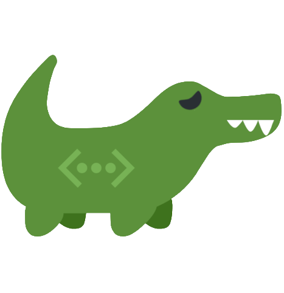

Capacity follows the links
Faster links become ready for more data sooner and therefore carry more. The distribution changes as link conditions change.

Your friendly link aggregator.
Aggligator combines network links between two endpoints into one connection, distributing data across those currently available. Failed links are re-established automatically, so the logical connection can survive a device switching between Wi-Fi, mobile data and Ethernet, even when its IP address changes.
The agg-tunnel utility carries ordinary TCP connections over
Aggligator. Existing clients and servers can use aggregated links without changes
to their code.
The TCP transport discovers routes between the two hosts and uses each as a link.
Both ends receive a stream implementing AsyncRead and
AsyncWrite.
use aggligator_transport_tcp::simple::tcp_connect;
use tokio::io::AsyncWriteExt;
// Connect to "server" over all network interfaces.
let mut stream = tcp_connect(["server"], 5900).await?;
stream.write_all(b"hello").await?;use aggligator_transport_tcp::simple::tcp_listen;
// Listen on all network interfaces.
let listener = tcp_listen("[::]:5900".parse()?).await?;
loop {
// One connection, including all its links.
let mut stream = listener.accept().await?;
}
A Connector combines different transport types in the same connection.
This client can reach a device over the network and over USB at once.
let mut connector = Connector::new();
connector.add(TcpConnector::new(["server"], 5900).await?);
connector.add(UsbConnector::new(|dev, _| dev.vendor_id() == 0x1209)?);
let stream = connector.channel().unwrap().await?.into_stream();Faster links become ready for more data sooner and therefore carry more. The distribution changes as link conditions change.
Links may fail, return, be added or be removed while the connection runs. When none remain, transport connectors keep reconnecting for a configurable time instead of immediately closing the logical connection.
Aggligator runs in user space over ordinary ordered byte streams or packet streams, without multipath support from the operating system or network.
A secret established with Diffie-Hellman protects the connection identifier used when adding links. Payload data is not encrypted; use TLS for untrusted links.
Each link reports latency, throughput and unacknowledged data. Applications can consume the values directly or display them with the terminal monitor.
Aggligator contains no unsafe code, runs on Tokio and supports
native platforms and WebAssembly.
Simple packet striping can let one slow link hold back an otherwise fast connection. Aggligator instead adjusts how much data is in flight on each link while the connection runs.
Aggligator does not calculate a fixed bandwidth share. A faster link finishes sending sooner, becomes ready again and naturally carries more packets.
Acknowledgements show how much received data is waiting behind an earlier packet. If that backlog grows, the sender reduces the unacknowledged-data allowance for the link used by the oldest outstanding packet.
When faster alternatives exist, a link with excessive round-trip time can be removed from normal scheduling. Test data and a ping periodically check whether it is ready to return.
Transport crates create links for Aggligator. A connection can combine different transport types.
| Carries links over | Crate |
|---|---|
| TCP | aggligator-transport-tcp |
| WebSockets | aggligator-transport-websocket |
| WebSockets from a browser | aggligator-transport-websocket-web |
| USB | aggligator-transport-usb |
| WebUSB from a browser | aggligator-transport-webusb |
| Bluetooth on Linux | aggligator-transport-bluer |
| SOCKS5 proxies | aggligator-transport-socks |
| Anything above, wrapped in TLS | aggligator-wrapper-tls |